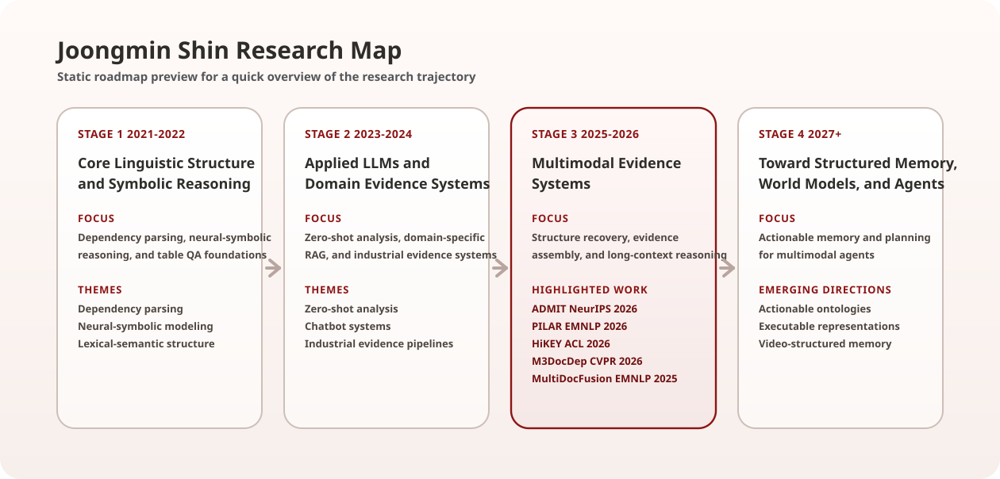

Detailed Research Map
The static roadmap appears first for a quick overview. It summarizes how my research evolves from linguistic structure and domain evidence systems to multimodal evidence systems, with future directions in structured memory, world models, and agents.

Open Interactive Mermaid Diagram
The interactive diagram loads only when opened and renders as SVG, while the static preview above remains the default fallback.
Interactive diagram loads on demand.